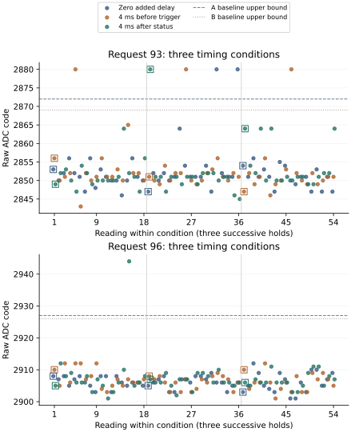

Result: delays verified, raw exceptions retained
The return of 2 October 2026 contains 540 complete acquisitions and 20,839 native records. Recording, restoration, configuration-slot timing and trigger-relative timing met their declared criteria. All four frozen recognition rules accepted 72/72 reference medians and 108/108 held-out medians. No observation was unavailable.
Seven held-out raw readings remained exceptional under every rule. Neither added delay eliminated them. Counts below describe this return; the clustered observations do not establish independent failure probabilities or equal effects between conditions. Requests, counts, ADC codes and times are decimal.
| Added delay | Request 93 exceptions | Request 96 exceptions | Total exceptions | Correct held medians, each rule |
|---|---|---|---|---|
| Zero | 2/54 | 0/54 | 2/108 | 36/36 |
| 4 ms before trigger | 3/54 | 0/54 | 3/108 | 36/36 |
| 4 ms after status | 1/54 | 1/54 | 2/108 | 36/36 |

The current median success does not reverse the preceding failed median. It establishes that the seven held-out exceptions in this return did not defeat its original, disjoint three-reading groups. The smallest correct median margins were 8, 4, 5 and 1 ADC codes under A baseline, A candidate, B baseline and B candidate respectively.
Exception locations and recognition
Each request/condition combination contains three initialization readings and 51 later readings. The request-93 post-status exception occurred at initialization; its 51 later readings contained none. The request-96 post-status exception occurred later. Pooled later counts are therefore 2/102, 3/102 and 1/102 for zero, pre-trigger and post-status delay. These small counts, with different directions across requests, do not demonstrate a general improvement.
| Visit | Acquisition ordinal | Request | Delay | Raw code | Position in hold |
|---|---|---|---|---|---|
| 1 | 76 | 93 | Before trigger | 2880 | Later |
| 1 | 104 | 96 | After status | 2944 | Later |
| 2 | 18 | 93 | After status | 2880 | Initialization |
| 2 | 61 | 93 | Before trigger | 2880 | Later |
| 2 | 103 | 93 | Zero | 2880 | Later |
| 2 | 107 | 93 | Zero | 2880 | Later |
| 3 | 9 | 93 | Before trigger | 2880 | Later |
Ordinals start at zero within each visit. Every 2880 reading was rejected by all four rules. The 2944 reading was assigned the wrong state by A baseline and rejected by the other three. Both independently read result-byte pairs agreed in all 540 acquisitions, including these seven cases. Six exceptions had a following acquisition within the visit; all six successors, at the same request, fell inside every rule's expected interval. The seventh ended visit 2. Intervening cleanup, guard checks and acquisition operations prevent attributing the successor change to the trigger alone.
The 216 reference readings contain twelve exceptions under at least one rule. Their raw decisions remain separate from the 72 passing reference medians:
| Frozen rule | Reference correct / wrong / rejected | Held correct / wrong / rejected |
|---|---|---|
| A baseline | 207 / 3 / 6 | 317 / 1 / 6 |
| A candidate | 204 / 1 / 11 | 317 / 0 / 7 |
| B baseline | 206 / 1 / 9 | 317 / 0 / 7 |
| B candidate | 204 / 1 / 11 | 317 / 0 / 7 |
Measured intervals and retained diagnostics
All 108 pre-trigger waits and 108 post-status waits reached their four-millisecond budgets at the declared placement. Measured ranges were 4000.019–4001.463 microseconds and 4000.000–4001.426 microseconds, respectively, within the fifty-microsecond overshoot limit. The zero condition recorded no added wait. Times use the configured 54 MHz architectural counter.
| Held condition | Status-read end to first result call, median µs | Trigger end to first result pair, median µs | Trigger end to second pair, median µs |
|---|---|---|---|
| Zero | 8.028 | 9019.102 | 13525.231 |
| Before trigger | 8.019 | 9018.343 | 13524.750 |
| After status | 4010.454 | 13020.954 | 17527.426 |
The post-status condition delayed result access by the intended interval and still produced two exceptions. All acquisitions observed one busy poll returning zero, followed by status 1 and successful cleanup. These are digital observations, not an independent conversion-freshness signal.
The configuration trace retains 9,204 events: 8,592 physical transfers, 306 omitted enable writes and 306 omitted selector writes. There were 24 resets and 516 omitted resets. No transfer failed or was inhibited. The original reset, enable and selector slots remained at least four milliseconds; their largest durations were 4001.519, 4001.593 and 4001.611 microseconds.
All 18,408 CPU/pin snapshots retained ISR 0, DAIF 0x3c0, EL2, released-high lines and the expected direction and multiplexer fields. The quiet windows contain 125,679 observations without a sampled transition or routing contradiction. Their largest observation gap was 7.296 microseconds. Configuration-snapshot gaps have conservative upper bounds of 5.913 milliseconds within acquisitions and 10.610 milliseconds between acquisitions. These observations do not establish continuous silence or exclude activity by other components.
Recording and provenance
Two read-only SD acquisitions matched byte for byte. All 290 preparation artifacts, including 281 frozen source files, matched their recorded hashes. The frozen reader reproduced all 540 sample, operation, control, configuration and timing records, journal footers, restoration and terminal status. Seven return checks independently reconstructed raw-byte and median decisions, exception positions, delay placement and diagnostics, and rejected incomplete journals and altered timing records.
Acquisition occupied 29.016 seconds. The terminal counter corresponds to 849.815 seconds, approximately 14 minutes 10 seconds. This timestamp follows auxiliary journal readbacks and precedes its own write/readback; it does not measure total powered duration. The prescribed allowance was twenty minutes; no workflow deviation was reported. The previous journal and boot-file bytes remained unchanged. Seven boot-volume metadata sectors changed; the capture does not identify their writer or timing.
Capture SHA-256: ab4ca9c80438ec9531d1756f83e6786657cbad4f38bc06836acde1061a25223c.
Frozen-reader assessment · Observation-level decisions and timing · Acquisition provenance · Storage comparison · Evidence index
Implication for the next comparison
This return verifies the timing intervention without identifying a beneficial placement: raw counts were 2, 3 and 2 per 108 held readings, and both delayed conditions retained exceptions. It does not justify adopting either interval as a remedy. Zero added delay remains the reference. The result does not rule out effects at other durations or establish equivalence between conditions.
A more discriminating next comparison would isolate what makes the retained digital value change: read it again without another trigger, perform cleanup alone, or perform cleanup followed by one new trigger, with matched timing and unchanged electrical request and configuration. These conditions should be scheduled for ordinary and exceptional readings alike, preserving the original reading rather than replacing it. This separates operations that intervened before the normal successors observed here and after the earlier stable snapshots. The retained-result update protocol develops this comparison. Digital update behavior remains distinct from independent analog freshness.
Question and rationale
Does the placement of an equal added delay around the ADC trigger and post-poll status read change the incidence or structure of exceptional raw values?
The configuration-retention repeat retained two exceptions after initialization with immediate reset, enable and selector reissues all omitted. Those immediate writes are therefore not necessary for those cases. Its failed request-96 triple, 2944 / 2906 / 2944, also demonstrates that two excursions in a three-reading group can defeat the median. Trigger timing, conversion behavior and interpretation of the returned digital result remain open.
This experiment moves a four-millisecond interval across the trigger/completion sequence. Four milliseconds is the existing, physically verified configuration-slot duration; it provides a bounded timing contrast without a new electrical request or register address. It is an experimental interval, not a claimed ADC conversion requirement or an optimized duration. The earlier readout comparison changed result-byte transfer dwell and padding; it did not compare these two placements. The repeated-snapshot observations retained exceptional values during later reads, so a post-status delay may make no difference. Both outcomes remain informative.
Conditions and exposure
Counts, requests, ADC values and times below are decimal; register addresses and opcode words are hexadecimal. Native journal encoding remains senary.
| Condition | Added interval | Placement |
|---|---|---|
| 0 | Zero | Same instrumentation, no delay loop |
| 1 | 4 ms | After preliminary status read, immediately before delegated trigger write 0x8018=1 |
| 2 | 4 ms | After busy polling terminates and the following 0x801b read returns without transport or ADC error; before result-byte reads |
The post-poll status is an observed digital value. Neither its bit 0 nor the end of busy polling independently proves a fresh analog conversion. The added interval is outside the delegated register call; existing snapshots remain between the wait and physical transfer.
First acquire 36 readings at each request 90, 93, 96, 99, 102 and 105: 216 references. These retain the preceding reference policy: reset only at hold start, repeat enable and selector, zero added delay. Current references assess transfer of the four fixed calibrations and cannot change their boundaries.
Then perform three visits of six 18-reading holds: 324 held-out readings. Each request/condition combination has 54 readings and eighteen disjoint triple medians, including three initialization readings and 51 later readings. All held conditions reset, enable and select only at hold start. Later readings omit all three writes, preserving the existing four-millisecond slots and twenty-microsecond reset delay.
| Visit | Ordered request / condition holds |
|---|---|
| 1 | 93/0, 96/1, 93/2, 96/0, 93/1, 96/2 |
| 2 | 96/0, 93/2, 96/2, 93/1, 96/1, 93/0 |
| 3 | 93/1, 96/2, 93/0, 96/1, 93/2, 96/0 |
Each combination occupies one early, middle and late pair of hold positions. Request order within those pairs reverses in visit 2. This balances those positions; it does not balance every predecessor or create independent boots.
Native execution and diagnostics
The existing SD entry executes literal AArch64 SEIGRASM. The new phase sample entry binds its condition and timing row, then delegates to the existing reissue, control, acquisition, ADC and GPIO operations. Its register entries bracket the original trigger and post-poll status calls and insert the selected delay. Electrical controls, guard checks, one-millisecond settling, released-pin observation, busy polling, repeated result-byte reads, cleanup, restoration and native SD recording retain their current owners.
The wrapper records successful trigger, observed busy-clear and post-poll status as distinct stages. A trigger or status transport failure suppresses the post-status delay. An ADC error bit also suppresses it. Cleanup after a busy timeout cannot qualify as the completion observation. Original failures stop the acquisition prefix; restoration and recording remain attempted. No success-seeking retry or replacement reading is introduced.
The existing 72-word sample, nine-word operation, 152-word control trace and 128-word configuration trace remain. Each acquisition adds a 24-word timing row: schema, condition, hold-first flag, completion, counter frequency, delay budget, sample start/end, trigger start/end/status, post-poll status start/end/transport status/value, wait start/end/count, sequence stage and sample return status; four trailing words must be zero.
Counters bracket delegated calls and the delay loop. They do not timestamp individual electrical edges or isolate the ADC conversion interval. The reader cross-checks these brackets against the original transaction records and result-read order. The delay must reach its four-millisecond budget with at most fifty microseconds overshoot; actual duration is reported. The zero condition must retain no wait count or wait timestamps.
CPU pending flags, mask/exception-level context, GPIO state and quiet-window observations remain available. The added delay enlarges gaps between snapshots; no continuous CPU/pin observer runs during it. Absence of a sampled contradiction cannot exclude another component, interrupt routing outside the observed state, DMA, internal activity or events between observations.
PC tooling copies explicit opcode words and interface data, executes checks with supplied devices, packages the SD image and independently decodes returned records. No foreign target compiler is used. Existing boot firmware, fixed MMIO addresses and incomplete PMIC semantics remain apparatus dependencies. This timing comparison adds no new Hyphos creation or firmware-independence claim.
All acquisitions precede SD persistence. The four journals contain contiguous sample, operation, control, configuration and timing arrays, associated by observation ordinal. The primary journal retains restoration, release and terminal status. A complete run yields 540 acquisitions and 20,839 native records.
Assessment and interpretation
All four recognition calibrations remain frozen from preparation 52A2D68F1212: A baseline, A candidate, B baseline and B candidate. Report their raw correct, wrong-state, unresolved and unavailable outcomes separately, together with disjoint median outcomes. Each rule requires all 72 reference and 108 held-out medians to satisfy its median criterion. Raw exceptions remain visible even when a median passes.
Recording requires all 540 observations and associated diagnostics, successful restoration and release, complete journal footers and terminal status. Assess reset/configuration-slot timing and delay timing separately. A failed or incomplete timing contrast cannot establish the full comparison. Preserve every failed prefix and diagnostic rather than silently excluding it.
Compare conditions within each request, visit and hold. Separate initialization from the later retained-configuration readings, while preserving each original three-reading group for the declared median assessment. Report raw values, distance from each frozen boundary, repeated excursions, predecessor values and counter intervals from trigger to status and first/second result pairs. Retain CPU/pin observations and their gaps alongside exceptional and ordinary readings.
A difference between the two equal-budget placements supports a timing-placement association under this apparatus. If both delays differ similarly from zero, greater elapsed time or cadence is an alternative explanation. If neither differs, this four-millisecond contrast supplies no observed improvement; it does not exclude effects at other intervals. A run with no exceptions in any condition cannot distinguish mitigation from an unchallenging exposure. Hold clustering and limited exposure prevent interpreting these counts as independent trials or a general failure probability.
Any median failure remains a limitation of the current recognition path. A placement association alone neither identifies the causal component nor independently establishes analog accuracy, conversion freshness or cluster-wide exclusivity.
Preparation and run interval
The run allowance remains 20 minutes. The preceding 23,444-record return reached its terminal counter at 957.254 seconds. This run records 20,839 records; its added delays total 0.864 seconds across 216 delayed acquisitions. These figures support the allowance, while completion still requires the returned terminal record and journal readbacks.
Preparation 9AFB54881F8F passed all 54 supplied-device execution and archived-return checks. The SD installation verified 6,144 transfers and two matching full readbacks while the volume remained locked, followed by successful ejection. The pre-write backup matches the preserved previous return. The physical return recovered the complete sequence; preparation checks and physical outcomes remain separate.
Image SHA-256: 0887ef09113a8ba5cf3d033235395c552ea96e453a435aea1c734411f0a52ffe.
Frozen protocol · Manifest · Validation · Instruction continuity · SD verification · Evidence index